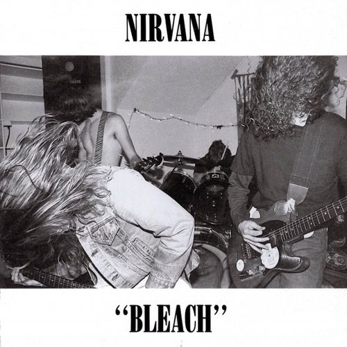

Àlbuns do Nirvana:
Introdução:
A discografia do Nirvana é composta por três álbuns de estúdio que marcaram a historia da música grunge e alternativa.Cada álbum representa uma fase única da banda, desde sua ascensão no cenário underground até o auge e o fim trágico.
Àlbum 1:Bleach (1989)
Data de lançamento: 15 de junho de 1989.
Descrição:O primeiro álbum de estúdio do Nirvana, foi lançado pela gravadora independente Sub Pop.Com um som cru e pesado,Bleach reflete as influencias punk e grunge da banda no inicio da carreira.Apesar de não ser um grande sucesso comercial na época, ganhou reconecimento após o sucesso de Nevermind.
Destaques:"About Girl," "love Buzz", "Blew".
Música: About Girl
Clique aqui para ouvir a música About GirlClique aqui para ouvir a música About Girl com legenda
Significado da música "About a Girl":
"About a Girl":Esta canção foi escrita por Kurt Cobain e aparece no primeiro álbum da banda,Bleach(1989).A letra de "About a Girl"é frequentemente interpretada como um reflexo das experiências e sentimentos de Cobain em relação a uma garota, com um tom de frustação e melancolia.O fato de a canção ser simples e direta no inicio da carreira da banda, sem muitos dos elementos de complexidade que surgiriam em trabalhos posteriores, também reflete a natureza crua e introspectiva de Cobain no inicio da carreira.Ele mesmo comentou que a música foi inspirada em uma relação pessoal com uma garota, mas que a letra deve ser vista como algo literal, pois ele gostava de criar músicas que pudessem ser interpretadas de diferentes maneiras.
Música:Love Buzz
Clique aqui para ouvir a música Love BuzzClique aqui para ouvir a música Love Buzz com legenda
Significado da música " Love Buzz":
"Love Buzz": A primeira do Bleach é um cover de uma música da banda holandesa Shocking Blue."Love Buzz" tem uma abordagem mais psicodélica, mas o Nirvana transformou-a em uma canção de amor desolado e meio pertubador, com a letra explorando temas de desejo e desconforto.Cobain declarou que foi uma das primeiras músicas que o Nirvana aprendeu a tocar como banda, e a escolha de cover foi uma homenagem áquela sonoriedade psicodélica dos anos 60.
Música:Blew
Clique aqui para ouvir a música Blew com legenda
Significado da música"Blew":
"Blew": A música que dá titulo ao primeiro álbum da banda foi escrita por Cobain e contém uma narrativa sobre perda, confusão e desejo de algo mais profundo."Blew" é uma critica ao vazio das relações e da vida moderna,refletindo o cansaço de Cobain com a superficialidade e a busca por algo autêntico e verdadeiro.A canção também expressa a frustação com as expectativas sociais e pessoias, e sua energia crua a tornou uma das faixas mais representativas do espirito do Bleach.
Àlbum 2:Nevermind (1991)

Data de lançamento:24 de setembro de 1991.
Descrição:Este álbum revolucionou o cenário musical dos anos 90 e colocou o Nirvana no topo.Nevermind vendeu milhões de cópias e apresentou ao mundo o movimento grunge, com sucessos que continuan icônicos até hoje.
Destaques:"Smells Like Tenn Spirit", "Come as You Are","Lithium".
Curiosidade:A capa com o bebê na piscina é uma das mais famosas da história da música.
Música:Smells Like Tenn Spirit:
Clique aqui para ouvir a música Smells Like Teen SpiritClique aqui para ouvir a música Smells Like Teen Spirit
Significado da música "Smells Like Spirit":
"Smells Like Teen Spirit":Lançada em 1991 como o primeiro single do Nevermid,essa música se tornou um hino do movimento grunge e uma das faixas mais representativas do Nirvana.A canção, com sua sonoridade crua e energética, é frequentemente vista como uma expressão de desilução adolescente e revolta contra as expectativas socias e culturais. Kurt Cobain afirmou que a letra não tem um significado profundo ou especifico, mas que foi escrita como uma tentativa de criar algo simples e direto, algo "sem sentido", que representasse uma atitude de rebeldia juvenil.A música, no entanto, foi rapiadamente adotada por fãs como um grito de identidade para a geração X.A frase"Here we are now, entertain us"é um exemplo de sua crítica á superficialidade da cultura popular.A música se tornou um simbolo de mundança na música alternativa.
Música:Come as You Are
Clique aqui para ouvir a música Come As You AreClique aqui para ouvir a música Come As You Are com leganda
Significado da música "Come as You Are":
"Come as You Are":Lançada também em Nevermind(1991), essa canção apresenta uma abordagem mais introspectiva de Cobain.A letra fala sobre aceitaçõa e autenticidade, mas com uma leve aura de incerteza.Cobain escreveu sobre ser fiel a si mesmo, mas ao mesmo tempo, abordando as complexidades das relações pessoais e das imperfeições humanas.A frase "Come as you are" transminte uma mensagem de acolhimento, mas também de ambiguidade, reconhecendo que, embora a aceitação seja importante, também há aspectos sombrios e contraditórios na natureza humana.A música é muitas vezes vista como uma crítica á conformidade social, um tema recorrente no grunge.
Música:Lithium:
Clique aqui para ouvir a música LithiumClique aqui para ouvir a música Lithium com legenda
Significado da música "Lithium":
"Lithium":Também do Nevermid,"Lithiu" lida com a luta interna de uma pessoa enfrentando altos e baixos emocionais, com uma referência á doença mental, especificamente ao transtorno bipolar.A letra reflete a luta de Cobain com seus próprios problemas de saúde mental, abordando o conflito entre a tentativa de encontrar equilibrio e os momentos de extrema dor e confusão.O uso de "Lithium como metáfora faz alusão ao medicamento usado para tratar transtornos de humor, mas também reflete a sensação de estar preso entre a sanidade e a loucura, a tensão entre sentir e não sentir.Cobain sugeriu que a canção explora a ideia de busca por uma solução ou cura para a dor emocional, mas tmabém de como é fácil se perder em uma existência de negação e indiferença.
Àlbum 3:In Utero(1993)

Data de lançamento:21 de setembro de 1993.
Descrição:O último álbum de estúdio da banda trouxe um som mais experimental e introspectivo.In Utero com temas profundos e pessoais,refletindo os desafios enfrentados por Kurt Cobain
Destaque:"Heart-Shaped Box", "All Apologies","Rape Me".
Curiosidade:Steve Albini o som do alt-rock dos anos 80 e 90.

Steve Albini foi um dos produtores mais influntes e respeitados no mundo da música, especialmente reconhecido por seu trabalho com o Nirvana no álbum In Utero(1993).Seu estilo de produção se destacou por ser direto e cru, com ênfase na autenticidade e na sonoriedade orgânica,o que contrastava com a produção polida e comercial de muitos álbuns da época.Albini tinha uma filosofia de gravação muito particular:ele acreditava que o papel do produtor era captar a energia e essência da banda,sem alterar ou manipular excessivamente o som.
Além de seu trabalho com o Nirvana.Albini também era conhecido por sua banda Shellac e por ter fundado o estúdio Electrical Audio em Chicago.Ao longo de sua carreira, ele se manteve fiel a principios de independência e resistência ás práticas comerciais da indústria musical, como não aceitar royalties dos álbuns em que trabalhava.Sua abordagem descomplicada e sua postura ética sobre a indústria musical o tornaram uma figura admirada por muitos músicos, especialmente os do cenário underground.
Infelimente, Albini faleceu em 2024 , aos 61 anos deixando um legado duradouro na música. Sua contribuição á cena do rock e ao som do In Utero continua sendo reverenciada como uma parte crucial da história do Nirvana.

Música:Heart-Shaped Box
Clique aqui para ouvir a música Heart-Shaped BoxClique aqui para ouvir a música Heart-Shaped Box com legenda
Significado da música "Heart-Shaped Box"
Essa música é uma das mais conhecidas do In Utero e aborda temas de amor, obsessão e vunerabilidade.Cobain disse que a canção foi inspirada por sua relação com Curtney Love, mas a letra também é aberta á interpretação. A metáfora da "caixa em forma de coração" pode representar tanto presentes de amor quando um simbolismo para sentimentos intensos e conflitantes.A música também tem tons sombrios e imagens que podem remeter a luta contra a doença e ao peso emocional do relacionamento.È um exmeplo do lirismo introspectivo e, por vezes, enigmático de Cobain.
Música:All Apologies
Clique aqui para ouvir a música All ApologiesClique aqui para ouvir a música All Apologies com legenda
Significado da música "All Apologies"
Cobain escreveu essa canção como um reflexo de seus sentimentos de culpa, inadequação e desejo de redenção.Muitas vezes interpretada como um pedido de desculpas a Courtney Love e á filha deles, Frances Bean, "All Apologies" é uma das músicas mais melancólicas e vulneráveis do Nirvana.Ela carrega um tom resignado, como se Cobain estivesse aceitando sua incapacidade de mudar certas coisas em sua vida.A repetição de "All in all is all we are" reforça um senso de aceitação e o inevitável ciclo de existência.
Música: Rape me
Clique aqui para ouvir a música Rape MeClique aqui para ouvir a música Rape Me com legenda
Significado da música "Rape me"
"Rape Me" uma das músicas mais polêmicas do Nirvana,"Rape Me", foi escrita como uma critica contudente á cultura do abuso e á exploração.Cobain descreveu a canção como uma resposta á violência sexual, mas também como um manifesto de sobrevivência e resistência.A repetição do titulo e a simplicidade do instrumental criam um impacto emocional e visceral tornando-a um dos momentos mais intensos do In Utero.A música foi interpretada erroneamente em várias ocasiões, mas Cobain sempre enfatizou que se tratava de empoderamento e denúncia, não de apologia.
Conclusão
Os álbuns do Nirvana não são apenas coleções de músicas; são retratos emocionais e culturais de uma geração.De Bleach a In Utero, cada disco representa a evolução musical e pessoal de Kurt Cobain, Krist Novoselic e Dave Grohl, além de refletir as lutas e os triunfos de uma banda que marcou a hístória da música.A profundidade lírica, a intensidade das performances e a autenticidade do Nirvana continuam a inspirar milhões de fãs ao redor do mundo. Que cada nota e cada palavra dessas músicas nos lembrem do poder da música como forma de expressão e da capaciade da arte de transcender o tempo.